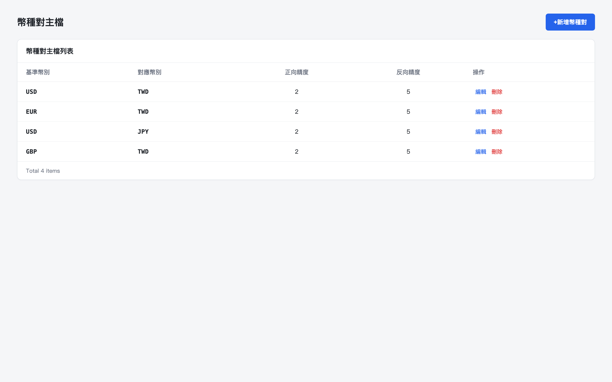
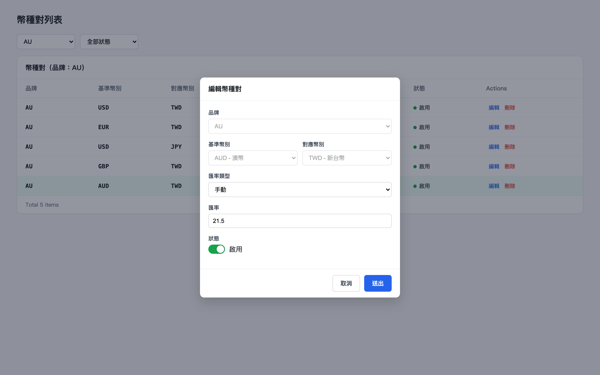
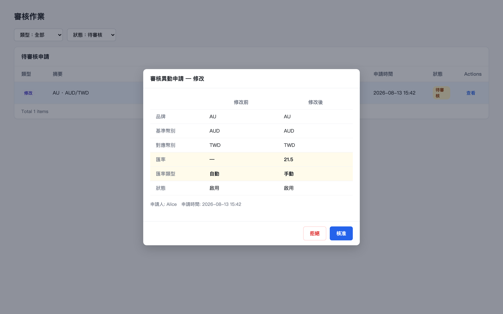
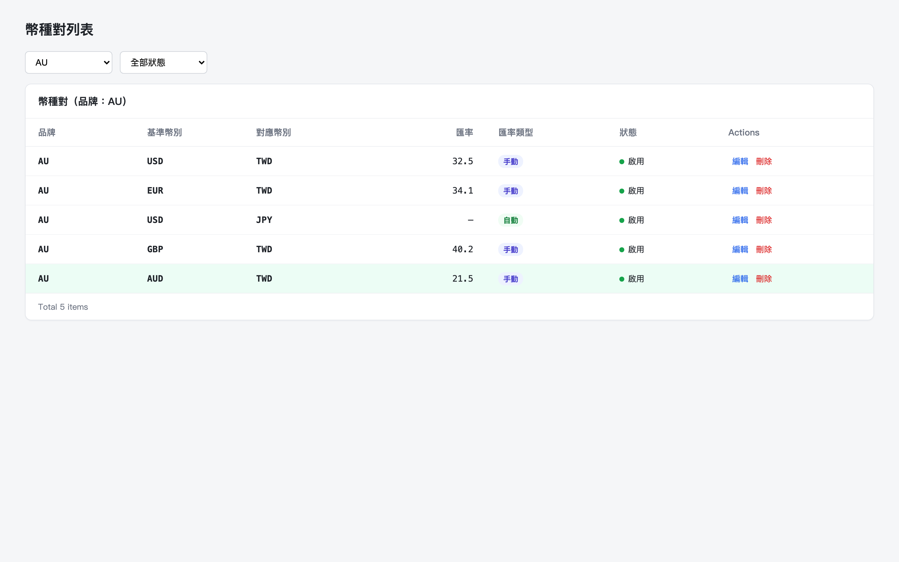

初始畫面：幣種對主檔列表，顯示現有的全域幣種對定義（USD/TWD、EUR/TWD、USD/JPY、GBP/TWD）

建立 AUD/TWD 幣種對主檔後，系統自動套用至所有品牌；切換到幣種對列表（品牌篩選：AU），可見新套用的 AUD/TWD（匯率類型：自動）。點擊「編輯」，將匯率類型改為手動並輸入匯率 21.5

送出修改申請後，於審核作業頁面開啟該筆待審核申請，比對修改前後差異（匯率類型：自動→手動，匯率：—→21.5，已標示變更），準備點擊「核准」

核准後：AU 品牌的 AUD/TWD 幣種對已更新為手動匯率 21.5，審核狀態解除，編輯與刪除按鈕恢復可用